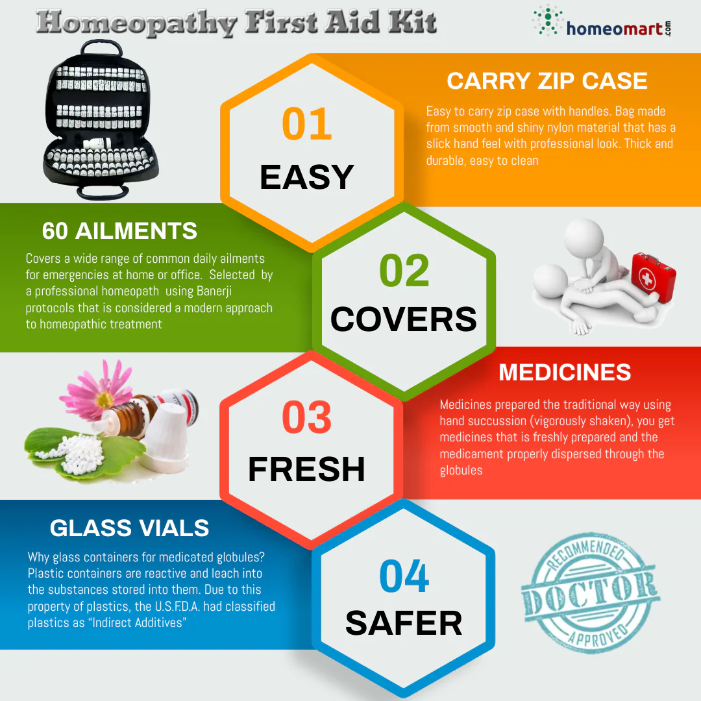

What to Do:
1.Wash your hands or put on disposable gloves if you have them. ...
2.Rinse the wound with water.
3.Cover the wound with a gauze or cloth (e.g., towel, blanket, clothing).
4.Apply direct pressure to stop the flow of blood and encourage clotting (when blood naturally thickens to stop blood loss).
What are the types of home remedies :
9 Home Remedies Backed by Science are
1.Turmeric for pain and inflammation.
2.Who hasn't heard of turmeric by now? ...
3.Chili peppers for pain and soreness. ...
4.Ginger for pain and nausea. ...
5.Fenugreek for breastfeeding. ...
6.Magnesium-rich foods for everything.